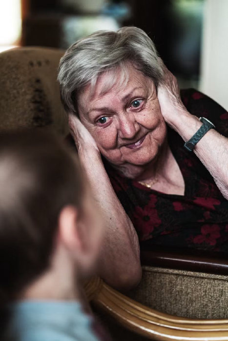
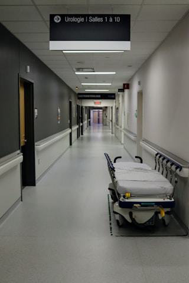
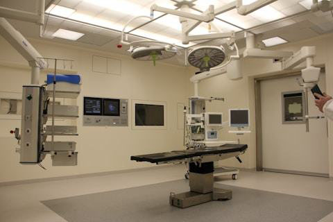
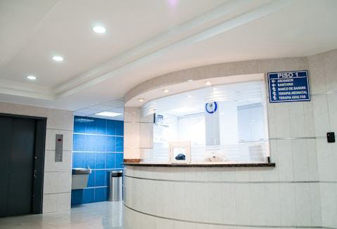
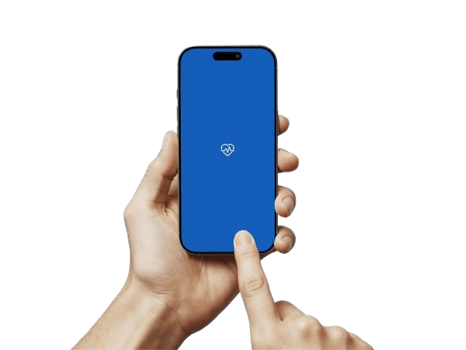
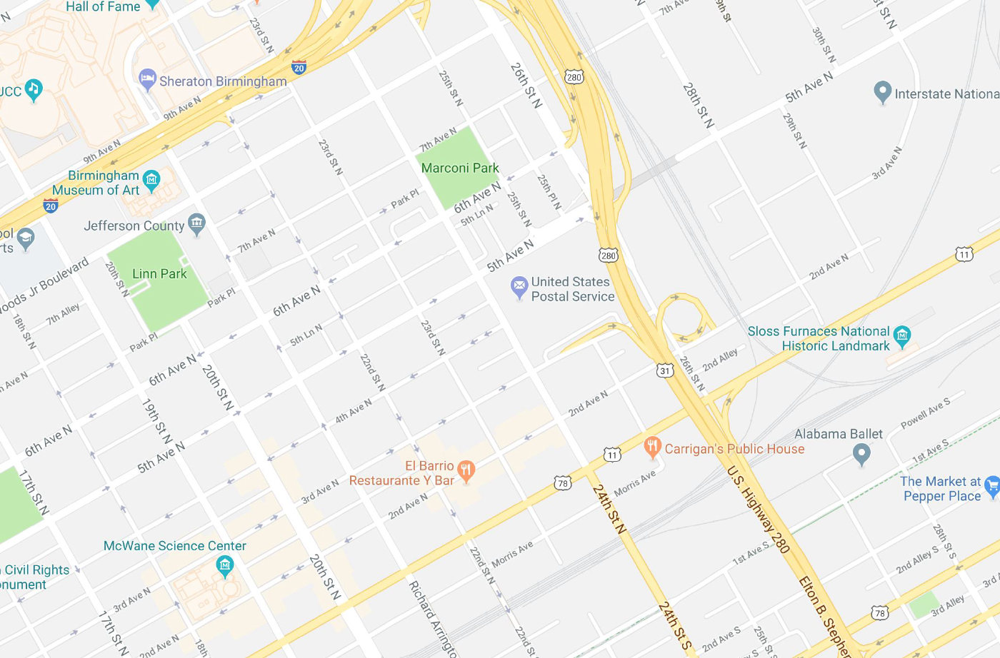

Patient photo - laughing child

Patient photo - elderly woman
Patient photo - young woman
Review author - bearded man, cut out
Review author - young woman, cut out
The signed-in user (Seif Mohamed)
Doctor pointing, cut out - the home 'Consult a doctor' banner

Hospital corridor with a gurney

Operating theatre

Hospital reception desk
Woman at a desk - MOST USED, on 10 screens
Woman holding a stethoscope - on 12 screens
Senior man at a laptop - on 11 screens incl. chat
Blonde woman in a white coat
Senior man, hands in pockets
Man with glasses, arms crossed
Man in a green surgical mask
Woman with long hair, arms crossed
Man in blue scrubs
Woman holding a blue folder
Woman on an orange background
Woman on a teal background
Woman outdoors, green building
Man with glasses, pink background
Woman outdoors under trees

A man and a woman side by side

Team of five doctors
Party popper for the 'Card added' toast
Wink emoji for the home banner headline
Sleeping bell with Zzz - empty notifications
Two credit cards - empty payment methods

ONBOARDING 1 - hand holding a phone running Cure
ONBOARDING 2 - a man and a woman in white coats
ONBOARDING 2 - team of five doctors
Cure logo (heart + ECG pulse) in brand blue - for white backgrounds
Cure logo in white - for the blue splash screen

Street map - location confirm + map results background